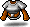
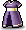
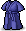
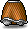

- HP
- 285
- 경험치
- 38
- MP
- 20
- 레벨
- Lv.21
- 회피율
- 25
- 명중률
- 120
- 물리 공격
- 100
- 마법 공격
- 0
- 물리 방어
- 30
- 마법 방어
- 30
- 최소 넉백 데미지
- 50
- 경험치 효율
- 13.3 / HP 100
HP·경험치 등은 원본 게임 데이터(GMS 83) 기준이라 메이플랜드와 다를 수 있어요. 경험치 효율은 HP 100당 경험치예요.
| 내 레벨 | 레벨 차이 | 필요 명중 | 마법 명중 (법사) |
|---|---|---|---|
| Lv.21 이상 | — | 92 | 128 |
| Lv.20 | −1 | 95 | 133 |
| Lv.19 | −2 | 99 | 138 |
| Lv.18 | −3 | 102 | 143 |
| Lv.17 | −4 | 106 | 148 |
| Lv.16 | −5 | 109 | 153 |
| Lv.15 | −6 | 113 | 158 |
| Lv.14 | −7 | 117 | 163 |
| Lv.13 | −8 | 120 | 168 |
| Lv.12 | −9 | 124 | 173 |
| Lv.11 | −10 | 127 | 178 |
| Lv.9 | −12 | 134 | 188 |
| Lv.6 | −15 | 145 | 203 |
| Lv.1 | −20 | 163 | 228 |
필요 명중 = ⌈(51 + 2 × 레벨 차이) × 회피율 ÷ 14⌉, 법사는 ÷ 10. 내 레벨이 같거나 높으면 레벨 차이는 0이에요.
- 주니어네키의 늪히든스트리트 · 23마리
- 2호선<2구역>커닝시티지하철 · 18마리
- 2호선<1구역>커닝시티지하철 · 14마리
- 원숭이의늪3히든스트리트 · 14마리
- 방황의늪1워닝스트리트 · 4마리
- 원숭이의늪2히든스트리트 · 4마리
- 방황의늪2워닝스트리트 · 3마리
- 방황의늪3워닝스트리트 · 3마리
- 위험한크로코1워닝스트리트 · 3마리
- 위험한크로코2워닝스트리트 · 3마리
- 원숭이의늪1히든스트리트 · 3마리
- 동구 밖태국
맵과 마릿수는 원본 게임 데이터 기준이에요. 메이플랜드에서는 다를 수 있어요.
20개 · 아이템을 누르면 이 아이템을 주는 다른 몬스터도 볼 수 있어요
확인 필요 4개는 다른 자료와 겹치지 않아서 메이플랜드에서 안 나올 수도 있어요.
장비 10
- 스틸 샤프 헬름

브라운 라멜
보라색 가람
파란색 검도복
브라운 라멜 치마- 흰색 가람 치마
 레드 잭부츠
레드 잭부츠- 넙치검
 메이플 폴암확인 필요
메이플 폴암확인 필요- 더블테일 너클확인 필요
소비 7
기타 3
드랍 정보: 고전 메이플 서버 데이터 Cosmic(GMS v83) 기준 참고용 (AGPL-3.0). 메이플랜드와 다를 수 있어요. 드랍률은 넣지 않았어요.